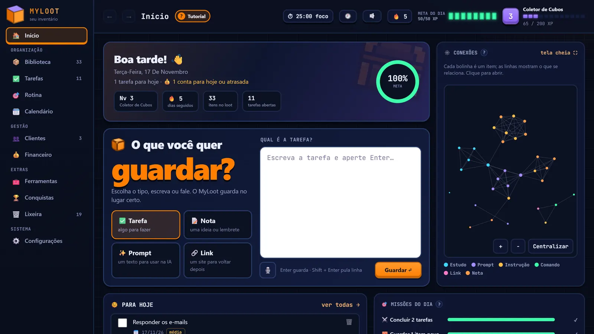
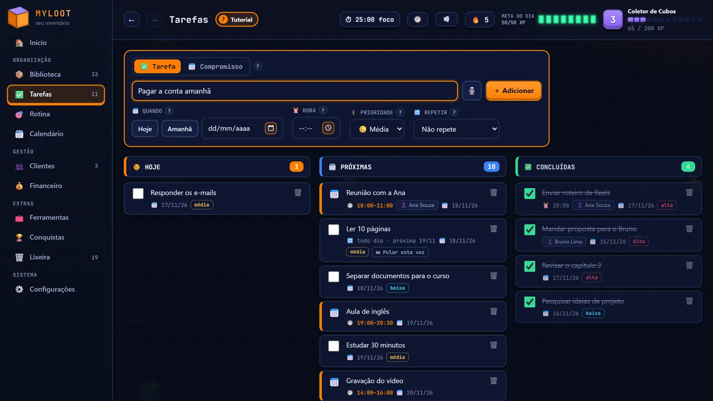
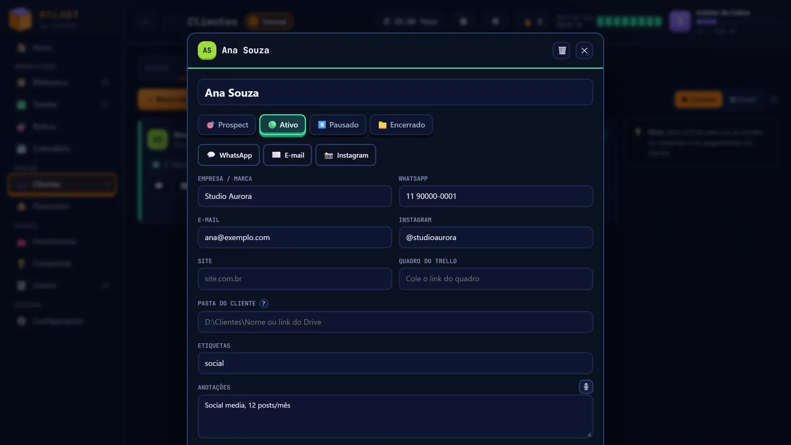
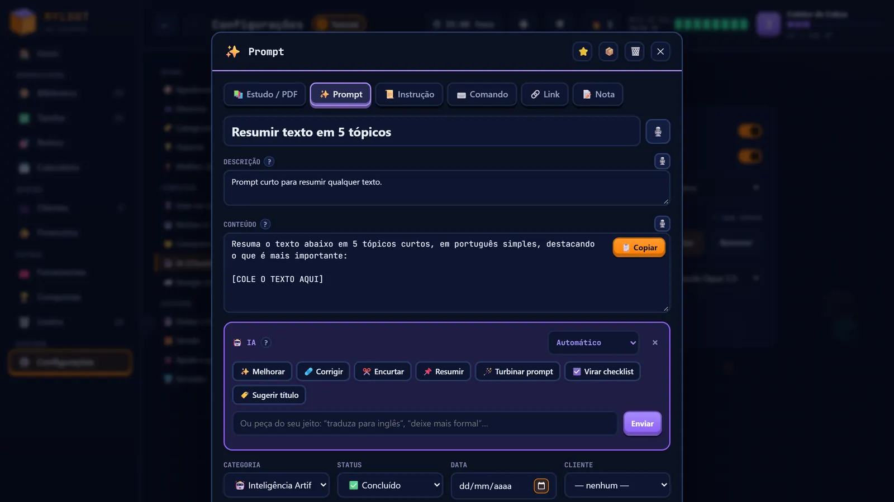
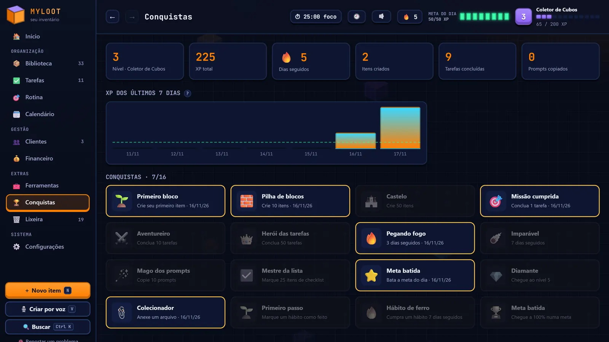
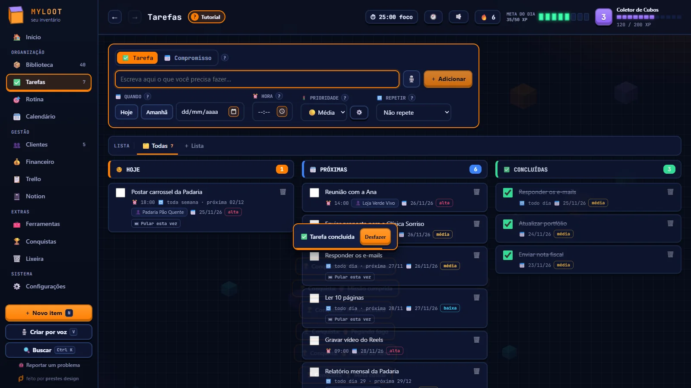

Windows, Mac e Linux · só no seu computador
MyLootSeu inventário pessoal para guardar, organizar e trabalhar.
Prompts, links, notas, tarefas, clientes e o financeiro num app que roda no seu computador, com XP, conquistas e seis mascotes que andam pela tela.
GrátisSem contaCódigo aberto
Pegue um mascote e solte onde quiser.
Veja o MyLoot em 2 minutos
Cada mascote apresenta a sua parte do app, com voz própria e as telas de verdade.
Uma biblioteca para tudo o que você guarda
Escreva no Início e o MyLoot guarda como tarefa, nota, prompt ou link. Na Biblioteca cada coisa vira um cartão, com etiqueta e ficha própria.
- 📕 6 guias de IA em PDF, com videoaula, já vêm dentro do app
- 🗂️ Pastas dentro de pastas e um mapa dos itens, como no Obsidian

Tarefas, agenda e hábitos no mesmo lugar
As tarefas se dividem em Atrasadas, Hoje e Próximas. Compromissos têm hora de início e fim, os hábitos contam a sequência e o Foco segura 25 minutos sem distração.

Clientes e financeiro para quem trabalha sozinho
Cada cliente tem ficha com contato, status, anotações e pagamentos. O Financeiro mostra o saldo do mês, contas fixas, parcelas e o que ainda vai entrar.
- R$ “Só este” ou “este e os próximos” ao mudar uma série
- ↻ Renovar conta fixa por mais 12 meses

IA, Drive, Notion e Trello ligados ao MyLoot
Use o Claude Code, o Codex ou o Gemini CLI pela sua própria assinatura, sem pagar API. Copie a pasta para o Google Drive ou sincronize dois PCs por ela, e mexa nos seus quadros do Trello e nas bases do Notion sem sair do MyLoot.

Pontos, conquistas e um mascote que comemora com você
Cada tarefa feita dá XP, o nível sobe com confete e as conquistas vão aparecendo. Escolha o seu mascote, dê um nome e solte a música de fundo.
Faça carinho ou solte o Slime aqui para ganhar XP.

Nada se perde: desfaça, recupere e leve tudo junto
Seus dados ficam numa pasta sua. Todo aviso tem Desfazer, o histórico volta qualquer ação e a lixeira guarda o que foi apagado. O backup leva os anexos e o app se atualiza sozinho.

Grátis · Sem conta · Código aberto
Precisa só do Node.js. O MyLoot abre numa janela só dele e deixa um baú perto do relógio do Windows.
- Instale o Node.js (versão LTS).
- Baixe o ZIP e extraia a pasta onde quiser.
- Dê dois cliques em
Instalar.bat: ele cria o atalho e abre o app. - Veja o vídeo passo a passo (55 s)
- Instale o Node.js (versão LTS).
- Baixe o ZIP e extraia.
- Botão direito em
Instalar.command→ Abrir → Abrir de novo.
- Instale o Node.js (LTS) pelo site ou pelo gerenciador de pacotes.
- Baixe o ZIP e extraia.
- No terminal, dentro da pasta:
sh instalar.sh